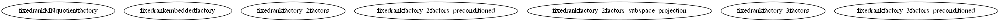

Master index
Index for manopt\manifolds\fixedrank
Dependency Graph for manopt\manifolds\fixedrank

Generated on Tue 07-Jul-2015 09:52:36 by
m2html
© 2005
 Master index
Master index Master index
Master index